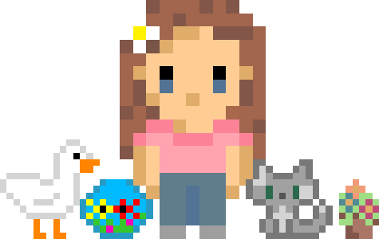

Credits
I would like to thank everyone who participated in any way for this project.
First of all, I wanted to thank Chiara and Sophie for helping me a lot in the decision
making for the final forms of the player and the areas.
Then, Eliseo and Rayan who helped by lending me their amazing drawing skills. Eliseo made every ennemies presented in this wiki and Rayan helped with the backgrounds of the areas wether it was to design them or to help drawing them.
Thank you everyone that wasn't specifically mentionned for helping with little things such as giving your opinion or pointing out some things that didn't work.
And last but not least, I really wanted to thank Alain Cardinaux for accompanying me throughout all this project while it was still under school conditions and for being my tutor.
Thank you everyone once again.
